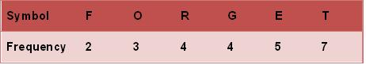
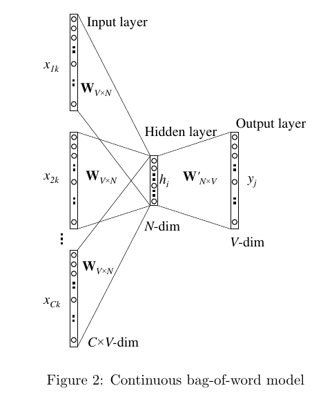
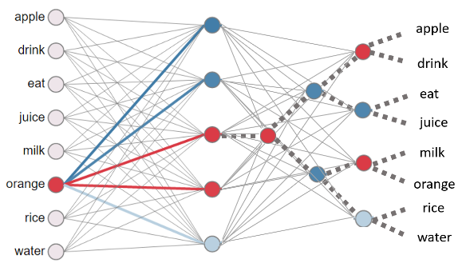

分层softmax
入坑自然语言处理，论文word2vec Parameter Learning Explained基本是必读的，这篇论文中的Hierarchical Softmax，中文叫做分层softmax/层次softmax是比较让人头大的内容，这篇博文试图阐述Hierarchical Softmax算法在word2vec中的应用。
Huffman Tree
中文名叫霍夫曼树/霍夫曼编码，是个二叉树（注意不是二叉搜索树），这部分内容比较简单，维基百科上也说的非常清楚，下面搬运一下维基百科上的例子：
示例：
霍夫曼树常处理符号编写工作。根据整组数据中符号出现的频率高低，决定如何给符号编码。如果符号出现的频率越高，则给符号的码越短，相反符号的号码越长。假设我们要给一个英文单字”F O R G E T”进行霍夫曼编码，而每个英文字母出现的频率分别列在Fig.1。

演算过程：
（一）进行霍夫曼编码前，我们先创建一个霍夫曼树。
- 将每个英文字母依照出现频率由小排到大，最小在左，如Fig.1。
- 每个字母都代表一个终端节点（叶节点），比较F.O.R.G.E.T六个字母中每个字母的出现频率，将最小的两个字母频率相加合成一个新的节点。如Fig.2所示，发现F与O的频率最小，故相加2+3=5。
- 比较5.R.G.E.T，发现R与G的频率最小，故相加4+4=8。
- 比较5.8.E.T，发现5与E的频率最小，故相加5+5=10。
- 比较8.10.T，发现8与T的频率最小，故相加8+7=15。
- 最后剩10.15，没有可以比较的对象，相加10+15=25。
最后产生的树状图就是霍夫曼树，参考Fig.2。
（二）进行编码
- 给霍夫曼树的所有左链接’0’与右链接’1’。
- 从树根至树叶依序记录所有字母的编码，如Fig.3。

以上便是Huffman Tree的主要内容，在word2vec算法中，这个方法是用来替代softmax层来减少计算量的。至此，需要了解到的信息有以下几点：
1.最后树的输出FOERGT是不要特定排序的，排列成FORGET也是可以的，就是画图不是很方便；
2.在word2vec中，这里的字母就是单词了，如果单词出现的频率越高，则给单词的码越短（离根节点越近），相反单词的号码越长；
3.构建Huffman Tree的中间节点（5, 8, 10, 15, 25）的个数是字典中单词个数减1
softmax in word2vec
word2vec Parameter Learning Explained这篇论文中介绍了 Continuous Bag-of-Word Model（连续词袋模型）和skip-gram model（跳字模型），分别对应了词向量的两种训练方法：利用context预测中心词以及利用中心词去预测context。对于连续词袋模型（CBOW）来说，一般的做法（如下图所示）是先对每个单词进行one-of-N编码（one-hot encoded），作为训练网络的输入，接着构建一层hidden layer，最后构建输出层，这一层是一个softmax层，每个context单词到中心单词的事件都被认为是独立的，所以将这些事件发生的概率相乘，最后构建损失函数，即：将输出概率分布和实际选中的词概率分布进行Corss Entropy计算，接下来使用SGD对参数进行更新。这里，hidden layer的训练结果就是最终的word vector了。
需要注意的是：对于任意的单词，Input layer和Hidden Layer之间的权重矩阵W是参数共享的

上述方法看起来是没毛病的，问题是计算量有点大，尤其是进行反向传播更新参数的时候$t$：
式（1）说明，参数更新的时候，对于每一个单词每一次迭代都至少有的计算量，如此大的计算量是由于softmax引用了词典中的所有单词。
在skip-gram模型中也是一样的：
至此应该了解到：
1.浅层的网络就可以学习出来词向量；
2.W矩阵对于不同的单词是参数共享的，单词顺序发生变化的时候是不影响结果的；
3.参数更新时的计算量非常大。
Hierarchical Softmax in word2vec
为了减少计算量，作者提出了两种近似计算方法，第一种叫做Negative Sampling（负采样），该方法就是对词典中的特定属性的单词进行特定分布的采样，将计算的数据量降低了（详见论文）；第二种就是Hierarchical Softmax（分层softmax/层次softmax），该方法将softmax层替换成了分层softmax层。分层softmax的计算过程如下图所示：

图片来自这里
从图中可以看出，hidden layer到output layer的连接原本是一个简单的softmax，有V个神经元和所有的hidden layer两两连接，现在变成了一个树，有V-1个神经元和所有的hidden layer两两连接。计算概率的方法也发生了变化：
其中，当时，中括号内为1，否则为-1，这是用到了一个sigmoid函数的小trick：。所以式（2）的意思就是从根节点到目标单词，有且仅有一条路径可以到达，在这条路径上往左走的概率是，往右走的概论自然就是，逻辑回归那篇也介绍过，sigmoid函数是用来做二分类的，在这里正好合适；当路径上的所有二分类的概率都连乘后，得到的就是预测单词的概率，可以证明，词典中所有单词被预测到的概率和为1。这也是这个方法被叫做分层softmax的原因了。
如此一来，计算某个单词被预测的概率就仅仅和该单词到hidden layer的神经元连接的唯一路径相关了，更新参数的时候计算量一下子降到了O(log(V))。
仔细想一下，
Hierarchical Softmax和CNN的思想其实有点类似，把原本的全连接变成了部分的特定连接。
关于这方面的源码编写可以参考这个美国老哥的博客。
Reference
- Rong, X. (2014). word2vec parameter learning explained. arXiv preprint arXiv:1411.2738.
- Morin, F., & Bengio, Y. (2005, January). Hierarchical probabilistic neural network language model. In Aistats (Vol. 5, pp. 246-252).
- https://www.youtube.com/watch?v=C4X0Cb5_FSo&list=PLLbeS1kM6teJqdFzw1ICHfa4a1y0hg8Ax&index=17&t=0s
- https://learning.oreilly.com/library/view/python-natural-language/9781787121423/a63263c0-bd79-4c15-88d0-8898186e03a5.xhtml
- https://zhuanlan.zhihu.com/p/35074402
- http://www.trevorsimonton.com/blog/2016/12/15/huffman-tree-in-word2vec.html
- https://www.quora.com/What-is-hierarchical-softmax